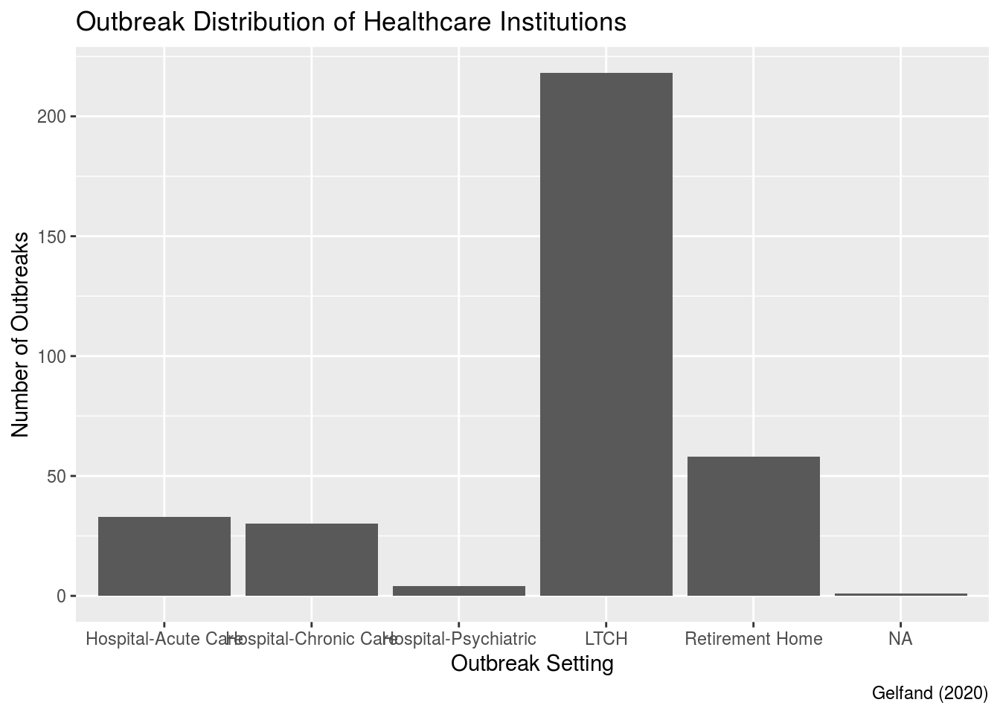
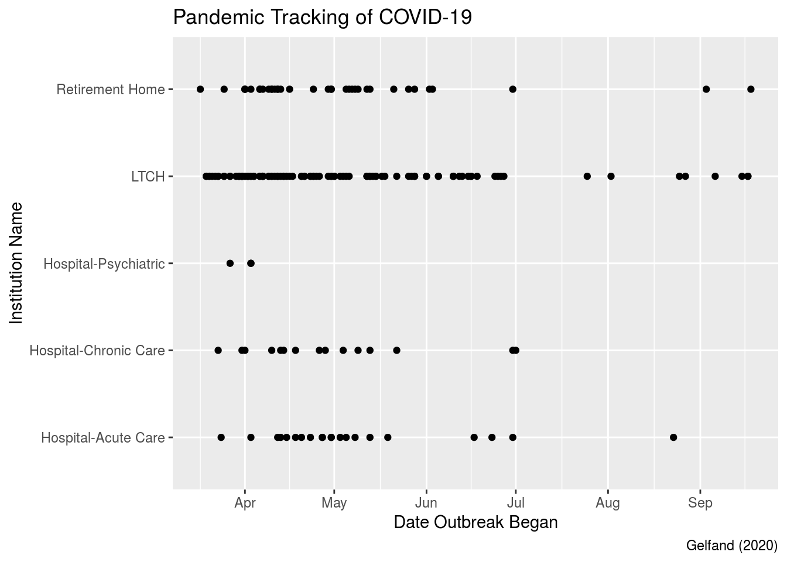

Abstract
This is a data analysis of the outbreaks in Toronto health institutions within 2020 using ggplot2 (Wickham (2016)) and tidyverse (Wickham et al. (2019)) within R Markdown (JJ Allaire (2020)). An overview of the paper includes an outbreak distribution seen within healthcare settings which shows majority of reported outbreaks occurring within long-term care homes raising concerns about the infection prevention and control procedures within these facilities. When the dataset was filtered to examine only COVID-19 outbreaks within all institutions, the trend of outbreak occurrence date displays the pattern of the COVID-19 pandemic. Further work includes the investigation of the outbreak magnitude within the institutions as well as examining the social and economic impact in Toronto during the COVID-19 pandemic.
Introduction
Within scope of this paper, the data set ‘Outbreaks in Toronto Health Institutions 2020’ is analyzed for two purposes; to gain insight on outbreak occurrence in different healthcare settings, and to obtain an outline of the 2020 COVID-19 pandemic. Two variables in the data set are focused on to address these purposes.
The first variable in question involves the outbreak setting. A bar graph was created to visually observe the difference in the the amount of institutions in outbreak separated by the type of setting of the facility. This graph demonstrates the large number of long-term care homes in outbreak compared to retirement homes and hospitals. The second variable in question involves the date of COVID-19 outbreak declared within all institutions. A plot graph is used to show the frequency of facilities in a COVID-19 outbreak during the 2020 COVID-19 pandemic. The graph visualizes the trend of the pandemic showing more institutions going into outbreak during April to June suggesting the first wave. Forecasting of this graph can also suggest a possible second wave of the pandemic due to more outbreaks occurring after that first wave.
Enlisted below in this paper consist of the Outbreaks in Toronto Healthcare Institutions 2020 data set, Outbreak Distribution in Healthcare Institutions bar graph, and Pandemic Tracking of COVID-19 plot graph. The discussion investigates the importance of viewing the result of different facilities’ IPAC procedures and using the data of a certain disease outbreak in institutions to view the trend of a pandemic. Weaknesses include the uncertainty of the outbreaks’ magnitude in the facilities which may contribute to a misrepresentation of a institute’s IPAC procedure. Thus, further work is needed on individual cases to fully understand the effectiveness of a facility’s ability to contain a disease outbreak.
Data
The opendatatoronto set is the Outbreaks in Toronto Healthcare Institutions (Gelfand (2020)).
library(opendatatoronto)
Outbreaks_in_Toronto_Healthcare_Institutions_2020 <- list_package_resources("https://open.toronto.ca/dataset/outbreaks-in-toronto-healthcare-institutions/") %>%
filter(name == "Outbreaks in Toronto Healthcare Institutions-2020") %>%
get_resource()
head(Outbreaks_in_Toronto_Healthcare_Institutions_2020)
## # A tibble: 6 x 9
## `Institution Na… `Institution Ad… `Outbreak Setti… `Type of Outbre…
## <chr> <chr> <chr> <chr>
## 1 Toronto Western… 399 Bathurst St Hospital-Acute … Enteric
## 2 Terraces of Bay… 55 Ameer Ave Retirement Home Respiratory
## 3 Humber Valley T… 95 Humber Colle… LTCH Respiratory
## 4 Norwood Nursing… 122 Tyndall Ave LTCH Respiratory
## 5 Fairview Nursin… 14 Cross St LTCH Respiratory
## 6 Deerwood Creek … 70 Humberline Dr LTCH Enteric
## # … with 5 more variables: `Causative Agent - 1` <chr>, `Causative Agent -
## # 2` <chr>, `Date Outbreak Began` <dttm>, `Date Declared Over` <dttm>,
## # Active <chr>Viewing the most recent data resource from 2020, one can observe the types of outbreaks within Toronto healthcare institutions. In this observational study, the variables include the institution name & address, outbreak setting, type of outbreak, causative agent, date of outbreak began, date declared over, and the active status of outbreak. It is with no surprise that during the 2020 COVID-19 pandemic, majority of the cases are respiratory outbreaks with the causative agent being COVID-19. Additionally, the data set also includes the outbreak began and declared over dates which can assist one in viewing the waves and peaks of the pandemic.
Graphs
library(ggplot2)
Outbreaks_in_Toronto_Healthcare_Institutions_2020 %>%
ggplot(aes(x = `Outbreak Setting`)) +
geom_bar() +
labs(y = "Number of Outbreaks",
title = "Outbreak Distribution of Healthcare Institutions",
caption = "Gelfand (2020)")
The categorical variable focused in this bar graph is the outbreak setting. Illustrated in the graph, the institutions are categorized by outbreak setting and recorded on how many outbreaks that category has. Within scope of this variable, one can observe that Long-term Care Homes consisted majority of the outbreaks followed by Retirement Homes. When these two categories, LTCH and Retirement Homes, are in comparison to Hospital (acute & chronic) care settings, speculation about the institutions’ infection prevention and control (IPAC) procedures become questionable. Therefore, the observations in this graph conclude that outbreaks occur more often in LTCH which could be the result of improper IPAC methods.
library(ggplot2)
Outbreaks_in_Toronto_Healthcare_Institutions_2020 %>%
filter(`Causative Agent - 1` == "COVID-19") %>%
ggplot(aes(x = `Date Outbreak Began`, y = `Outbreak Setting`)) +
geom_point() +
labs(y = "Institution Name",
title = "Pandemic Tracking of COVID-19",
caption = "Gelfand (2020)")
Within this plot graph, the tracking of the COVID-19 pandemic is based on the date that the Toronto healthcare institutions declared a COVID-19 outbreak. Seen in the graph, one can observe that most outbreaks occurred within the second quarter of the year (April to June) and have slowly diminished. Additionally, small amount institutions went into outbreak in late August to early September that can forecast a possible second wave to the COVID-19 pandemic. Thus, the analysis of the graph can provide information about the severity of the COVID-19 pandemic through the occurrence of outbreaks within healthcare institutions.
Discussion
In this paper, data on all outbreaks within Toronto healthcare facilities in 2020 were examined. It was seen that majority of the outbreaks occurred within LTCH compared to retirement homes & hospitals. The importance of this observation was to view the effectiveness of the institute’s IPAC regulations and procedures. Based on the data, it was inferred that LTCH could possibly have lower standards compared to hospitals. This is a concern because LTCH consist of elderly citizens with chronic medical conditions classifying them as high-risk individuals (Canada (2020)). Within outbreak situations, disease spreads more easily and more deadly with a population of high-risk individuals, thus importance is placed on the institute’s IPAC procedures to contain the outbreak.
One weakness about this paper is the unknown variable of the outbreak magnitude. During the COVID-19 pandemic, LTCH and Retirement home regulations state that these facilities need one case to declare outbreak (COVID-19 Directive). These conditions are unlike public hospitals which need two cases within a 14-day period to declare an outbreak (COVID-19 Outbreak). This difference is too small to be significant but should be noted. Referring to Graph 1: Outbreak Distribution in Healthcare Institutions, the number of institutions that declared outbreak were counted but the number of cases within each outbreak is unknown. In other words, although LTCH institutions contained more outbreaks, they didn’t necessary contain more cases and the outbreaks could have been more mild when compared to hospitals. Some next steps may include analyzing data that pertains to COVID-19 cases within these healthcare institution outbreaks. This can be applied to further understand the severity of the outbreak within the institute to infer the quality of the facility’s outbreak procedures and policies.
Additionally, using the date that the institute’s began their COVID-19 outbreak allows insight on the 2020 COVID-19 pandemic. Previously seen, the data entails the waves of the pandemic as well as allows future predictions to be made. The importance of this analysis allows the reader to track the pandemic without compiling extensive data on COVID-19 individuals, thus making the tracking simpler. Future steps could include relating the peaks and troughs of the pandemic to other data on social or economic factors that had impact Toronto during this time.
References
COVID-19 Outbreak Information at UHN. https://www.uhn.ca/Covid19/Pages /Outbreak_Information.aspx.
“COVID-19 Directive #3 for Long-Term Care Homes under the …” http://www.health.gov.on.ca/en/pro/programs/publichealth/coronavirus/docs/directives/LTCH_HPPA.pdf.
Canada, Public Health Agency of. “Government of Canada.” (Factsheet) - Canada.ca. September 16, 2020. https://www.canada.ca/en/public-health/services/publications/diseases-conditions/people-high-risk-for-severe-illness-covid-19.html.
JJ Allaire and Yihui Xie and Jonathan McPherson and Javier Luraschi and Kevin Ushey and Aron Atkins and Hadley Wickham and Joe Cheng and Winston Chang and Richard Iannone (2020). rmarkdown: Dynamic Documents for R. R package version 2.3. URL https://rmarkdown.rstudio.com.
Yihui Xie and J.J. Allaire and Garrett Grolemund (2018). R Markdown: The Definitive Guide. Chapman and Hall/CRC. ISBN 9781138359338. URL https://bookdown.org/yihui/rmarkdown.
Gelfand, Sharla. 2020. Opendatatoronto: Access the City of Toronto Open Data Portal.
Wickham, Hadley. 2016. Ggplot2: Elegant Graphics for Data Analysis. Springer-Verlag New York. https://ggplot2.tidyverse.org.
Wickham, Hadley, Mara Averick, Jennifer Bryan, Winston Chang, Lucy D’Agostino McGowan, Romain François, Garrett Grolemund, et al. 2019. “Welcome to the tidyverse.” Journal of Open Source Software 4 (43): 1686. https://doi.org/10.21105/joss.01686.